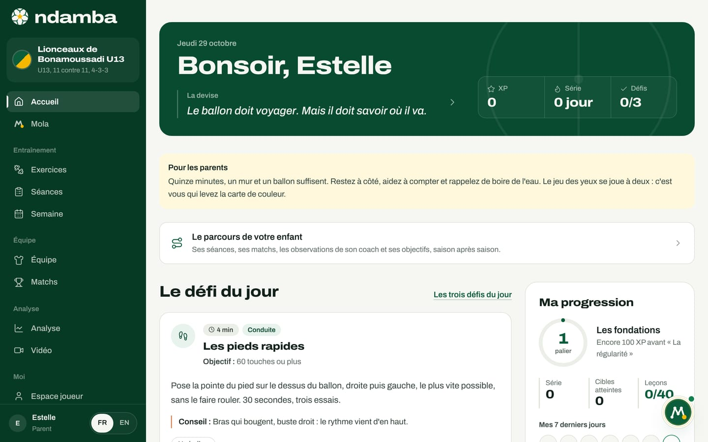
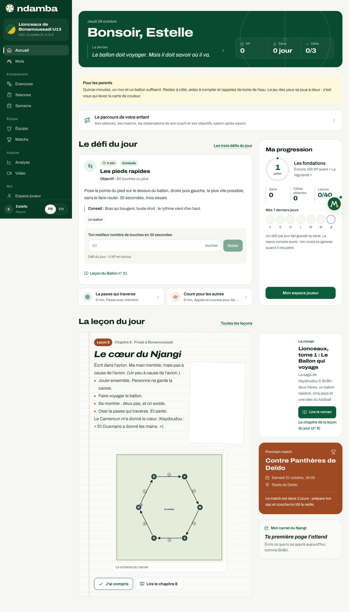
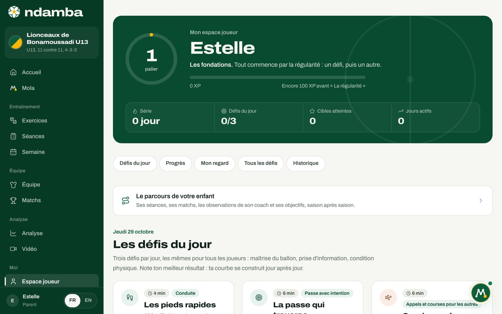
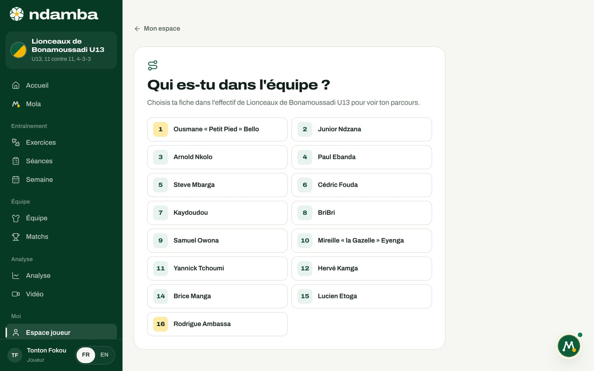
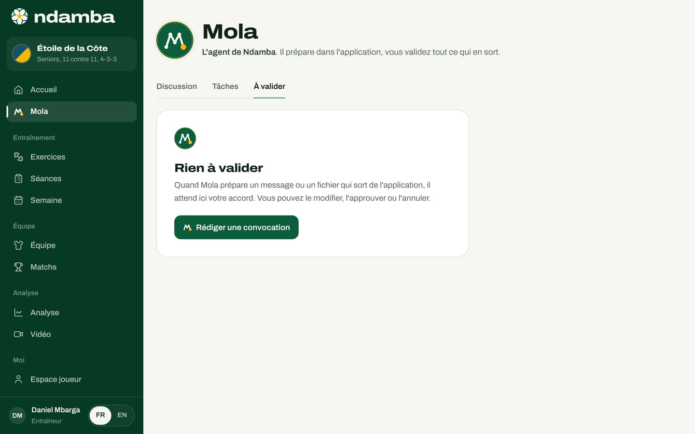

Les parents
Ce que voit un parent, comment suivre son enfant et faire le défi du jour avec lui sans mettre la pression, ce que Ndamba garde sur l’appareil et ne fait jamais partir sans vous, et les livres à lire ensemble.
8 min de lecture
Avant l’entraîneur, il y a les parents. Ce sont eux qui lavent le maillot, qui paient le transport jusqu’au terrain, qui attendent au bord de la touche, et qui, le soir, demandent « Alors, ce match ? ». Ils ont une influence immense sur l’envie d’un enfant de continuer, dans un sens ou dans l’autre. Ndamba leur donne une place précise : accompagner le travail de leur enfant à la maison, comprendre ce qu’il apprend, et l’aider sans transformer le football en examen. Ce chapitre décrit ce que voit un parent, comment il suit son enfant aujourd’hui, et ce que l’application fait, et ne fait pas, avec les données d’un mineur.
Ce que voit un parent
Un parent choisit le rôle Parent dans la conversation de bienvenue avec Mola (chapitre 5), ou plus tard dans Réglages, sous Rôle. Quand il le choisit à la bienvenue, Mola l’accueille avec un message pensé pour lui : il peut l’aider à accompagner son enfant avec les Leçons du Ballon, des exercices simples et le roman. Le menu est le même que pour tout le monde : un parent peut ouvrir les 64 exercices du Code Njangi ou les livres, qui sont ouverts à tous.
Le parent voit l’accueil et l’espace joueur des jeunes, décrits au chapitre 15. Il garde cet espace même si son enfant a 16 ans ou plus : l’espace performance, avec la forme du matin et la charge d’entraînement, est fait pour le joueur lui-même.


Une seule chose change sur l’accueil, mais elle compte : l’encadré Pour les parents, juste sous le salut. Il dit l’essentiel en trois phrases : « Quinze minutes, un mur et un ballon suffisent. Restez à côté, aidez à compter et rappelez de boire de l’eau. Le jeu des yeux se joue à deux : c’est vous qui levez la carte de couleur. »
Le reste de l’accueil est celui de l’enfant : Le défi du jour ouvert et prêt à être noté, la carte Ma progression (palier, série, leçons comprises), La leçon du jour avec son schéma, la carte du roman, le Prochain match de l’équipe et le carnet. Ces pages s’adressent à l’enfant et le tutoient : elles sont faites pour être lues ensemble, le parent à côté, le téléphone posé sur un muret pendant que l’enfant joue contre le mur.
La carte Prochain match est souvent la plus utile au parent : le jour, l’heure, le stade, et un petit rituel pour la veille (« Le match est dans 2 jours : prépare ton sac et couche-toi tôt la veille. »). Elle ouvre la feuille du match préparée par l’entraîneur.


L’Espace joueur du parent est le même que celui de l’enfant : les trois défis du jour, les progrès, Mon regard, la liste de tous les défis et l’historique. Le nom affiché en haut est celui du profil, donc celui du parent.


Suivre son enfant
Aujourd’hui, Ndamba n’a pas encore de comptes ni de synchronisation : toutes les données vivent dans le navigateur de l’appareil où elles sont saisies (chapitre 25). Suivre son enfant passe donc par l’appareil.
Le même appareil pour les défis. Les résultats des défis, les leçons comprises, le carnet et Mon regard sont gardés sur l’appareil où l’enfant les note. Si l’enfant fait ses défis sur le téléphone du parent, le parent voit tout : la série, les records, l’historique, les pages du carnet. C’est la manière la plus simple de suivre un enfant de 8 à 12 ans, qui n’a souvent pas de téléphone à lui.
La fiche de l’effectif pour le parcours. Le parcours (évaluations, observations, présences, minutes de jeu) vient de l’équipe et de son effectif. Quand l’équipe de l’enfant se trouve sur l’appareil, le parent relie son profil à la fiche de son enfant :
- Touchez la carte Le parcours de votre enfant, sur l’accueil ou dans l’espace joueur.
- L’écran Quelle est la fiche de votre enfant ? affiche l’effectif : « Choisissez la fiche de votre enfant dans l’effectif de Lionceaux de Bonamoussadi U13 pour suivre son parcours. »
- Touchez le nom de votre enfant. Son parcours s’ouvre, et la carte Le parcours de votre enfant de l’accueil affiche désormais sa saison : « Cette saison : 15 séances, 4 matchs, 2 objectifs en cours. »


Aujourd’hui, le parcours écrit par l’entraîneur n’est visible que sur l’appareil où il l’a saisi. Une sauvegarde exportée depuis ses Réglages peut le transporter sur un autre appareil, mais elle remplace tout ce qui s’y trouve. Le partage entre plusieurs appareils viendra avec les comptes et la synchronisation, prévus (chapitre 26). En attendant, l’information de l’équipe arrive souvent par un autre chemin : la convocation que l’entraîneur prépare avec Mola et envoie lui-même par WhatsApp, SMS ou e-mail (chapitre 11).
| Ce que vous voulez suivre | Où c’est gardé | Comment le voir |
|---|---|---|
| Défis, série, records, historique | Sur l’appareil où l’enfant note ses résultats | Faire les défis sur le même appareil |
| Leçons comprises, Mon regard | Dans le navigateur de cet appareil | Le même appareil |
| Le carnet du Njangi | Sur cet appareil | Le même appareil, ou Imprimer pour le garder sur papier |
| Le parcours (évaluations, observations, minutes) | Sur l’appareil de l’entraîneur | Relier son profil à la fiche, quand l’équipe est sur l’appareil |
| La convocation du match | Envoyée par l’entraîneur | WhatsApp, SMS ou e-mail |
Le défi du jour, à deux
Chaque défi dure de quatre à dix minutes et se fait seul, contre un mur ou avec quelques plots. Le parent n’a pas besoin de connaître le football pour aider. Il a trois rôles simples :
- Compter. La plupart des défis se notent par un nombre : des jongles, des passes contre le mur, des réussites, des secondes. Le parent compte à voix haute, l’enfant tape son meilleur résultat et touche Noter.
- Lever la carte. Deux défis demandent Un partenaire. Dans Le jeu des yeux, le parent lève une carte de couleur derrière l’enfant, qui fait une passe contre le mur, regarde par-dessus l’épaule et annonce la couleur avant de recevoir. C’est la leçon 22 du roman, « Voir avant, c’est jouer plus vite », jouée dans la cour.
- Veiller. Une gourde à côté du mur, cinq minutes d’échauffement avant les sprints, un jour sans défi par semaine. La règle de l’application est claire et s’adresse aussi au parent : « Si tu as mal, arrête-toi et préviens ton entraîneur ou tes parents. »
Aider sans mettre la pression
L’application est construite pour que l’enfant se compare à lui-même, jamais aux autres. Les paliers récompensent la régularité avant le talent : le premier s’appelle Les fondations, le deuxième La régularité. Le parcours d’un enfant de moins de 13 ans ne montre ni classement ni note de séquence. Quelques gestes prolongent cet esprit à la maison :
- Félicitez la série et l’effort plus que le record. Un jour de repos qui casse la série n’est pas un échec.
- Laissez l’enfant décider quand une leçon est Comprise. Demandez-lui plutôt de vous l’expliquer avec ses mots, ou de vous montrer le défi qui va avec.
- Respectez Mon regard sur moi. La page dit à l’enfant : « Sois honnête : c’est pour toi, rien n’est envoyé. » Si son regard et celui de son entraîneur diffèrent, l’application propose d’en parler après l’entraînement, pas de corriger la note.
- Lisez le parcours en commençant par le point fort. C’est aussi ce que Ndamba conseille aux entraîneurs quand ils évaluent un mineur : partager le profil avec lui et sa famille, en commençant par ses points forts.
La sécurité de votre enfant
Ndamba a été pensé pour des mineurs. Voici ce que l’application fait, et ce qu’elle ne fait pas.
- Les données restent sur l’appareil. Les défis, le carnet, Mon regard, les leçons comprises sont gardés dans le navigateur. L’historique des défis le rappelle : « Tout reste sur cet appareil : rien n’est envoyé sur internet. »
- Pas de compte, pas de profil public, pas de messagerie. Il n’existe dans Ndamba aucun moyen pour un inconnu de trouver un enfant ou de lui écrire. La seule conversation de l’application est celle avec Mola.
- Rien ne part sans vous. Mola prépare dans l’application. Un message WhatsApp, un SMS, un e-mail ou un fichier de calendrier attend toujours votre accord dans l’onglet À valider, puis s’ouvre dans votre propre application de messagerie : c’est vous qui appuyez sur Envoyer.
- Ce qui peut sortir. Quand le modèle d’intelligence artificielle facultatif est configuré sur le serveur (chapitre 18), la phrase que vous tapez à Mola est envoyée au serveur de Ndamba pour être mieux comprise, avec quelques éléments de contexte (le nom et la catégorie de l’équipe, le rôle, le prochain et le dernier adversaire). Les résultats des défis, le carnet et le regard sur soi n’en font pas partie. Sans ce modèle, Mola répond avec son moteur de règles.
- Tout effacer. Réglages, puis Tout effacer, supprime le profil, les équipes, les séances, les matchs, les résultats des défis, le carnet, les leçons comprises et Mon regard de ce navigateur ; seul le choix de la langue reste. L’action est définitive.


L’écran, le terrain et les livres
L’écran ne sert ici qu’à lire une consigne et à noter un nombre : le travail, lui, se fait dehors, avec le ballon. Un défi tient en quatre à dix minutes, et les trois défis du jour prennent, selon les jours, entre treize et vingt-quatre minutes. Un jour sans défi par semaine fait partie du programme.
Les livres, eux, se lisent sans limite et gratuitement, quelle que soit la formule. Le roman Lionceaux, tome 1 : Le Ballon qui voyage raconte en quarante chapitres l’histoire de BriBri et Kaydoudou, deux frères de Bonamoussadi qui apprennent le football du Cameroun à l’Angleterre (chapitre 20). Sur l’accueil, la carte du roman propose Lire le roman et, juste dessous, le chapitre de la leçon du jour. Un rituel simple marche bien avec les 8 à 12 ans : lire ensemble le chapitre du soir, ouvrir sa Leçon du Ballon, et faire le lendemain le défi qui va avec. Pour un moment de jeu, le jeu de football Lionceaux Football reprend les clubs du livre (chapitre 21).